Frontend requests
Every backend request the frontend can make, per page and per request-owning shared component: wrapper and endpoint, trigger, URL/state dependencies, what defers or skips it, and which requests start together. Parameters and response shapes: docs/references/api.md.
Home /
Everything uses a fixed window of the last 28 days and public videos only; there are no filters.
When the page opens
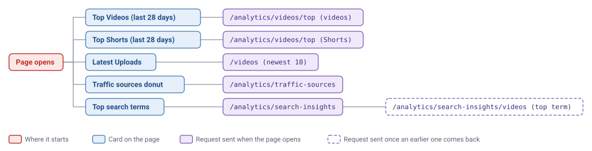
When you change something
Videos /videos
Filters, sort and page number live in the URL, so each request reruns when a value it uses changes.
When the page opens
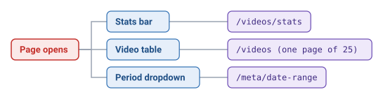
When you change something
- The title box waits until you stop typing for 300 ms before anything reloads.
- Filters are title, period or dates, type and privacy.
Playlists /playlists
Sort, page and title live in the URL.
When the page opens
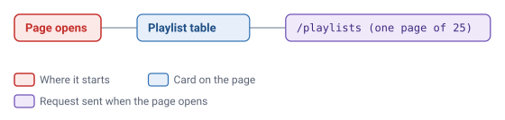
When you change something
- The title box waits until you stop typing for 300 ms before anything reloads.
Analytics /analytics
Filters live in the URL, so each request reruns when a filter it uses changes.
When the page opens
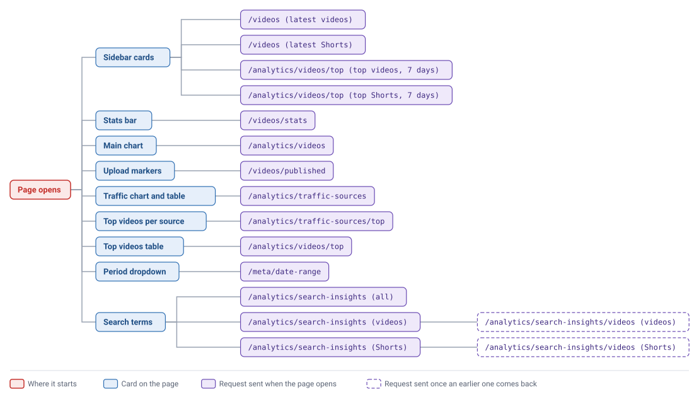
Analytics tab
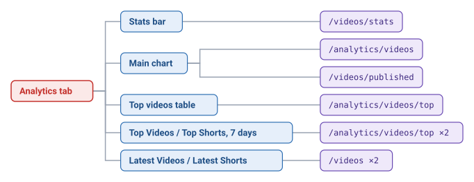
Traffic Sources tab
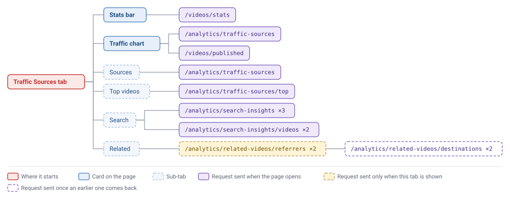
Comments tab
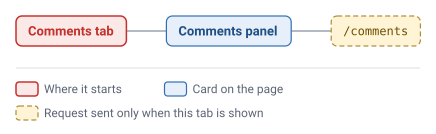
When you change something
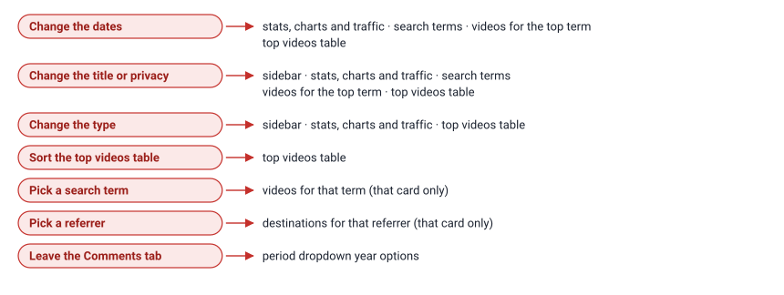
- The title box waits until you stop typing for 300 ms before the page reloads anything.
- With the Related Videos sub-tab open, date, title, privacy and type changes also reload the referrers, and date changes reload the destinations.
- After a date, title or privacy change, the two "videos for the top search term" requests run twice: once straight away with the old top term, and again when the new term lists arrive.
- The page-open requests (except the period dropdown) also run when the page is opened on the Comments tab, even though only the comments are shown there.
VideoAnalytics /analytics/videos/:id
The start and end dates live in the URL. {id} is the video in the page address.
When the page opens
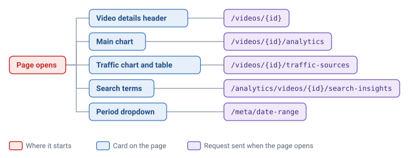
Analytics tab
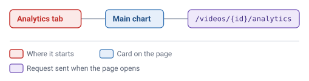
Traffic Sources tab
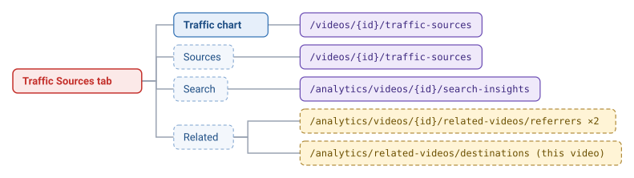
Comments tab
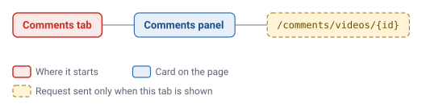
When you change something
- With the Related Videos sub-tab open, date changes also reload the referrers and destinations.
- The destinations request doesn't wait for anything: this video is always the referrer.
- None of the requests wait for the video details, so an unknown video ID sends every request and each comes back 404.
PlaylistAnalytics /analytics/playlists/:id
The Analytics and Traffic Sources tabs use their own analytics_* filters in the URL; the Videos tab uses separate ones. {id} is the playlist in the page address.
When the page opens
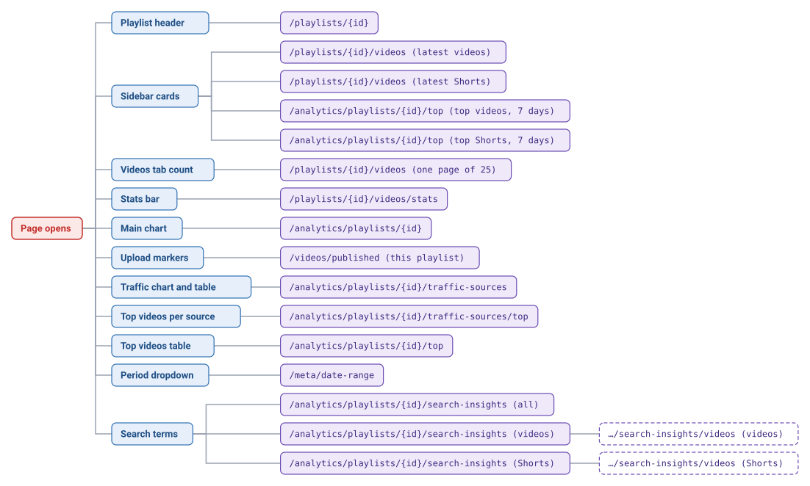
Analytics tab
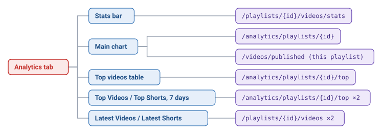
Traffic Sources tab
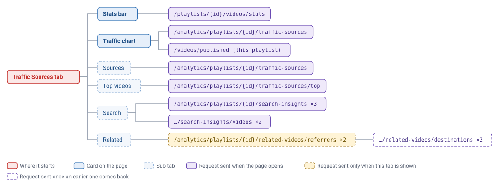
Comments tab
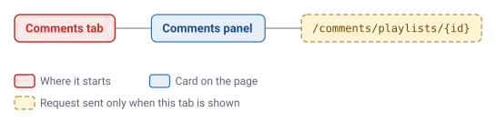
Videos tab
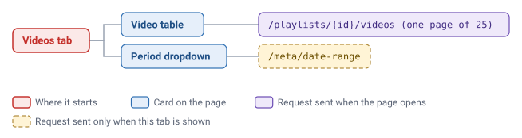
When you change something
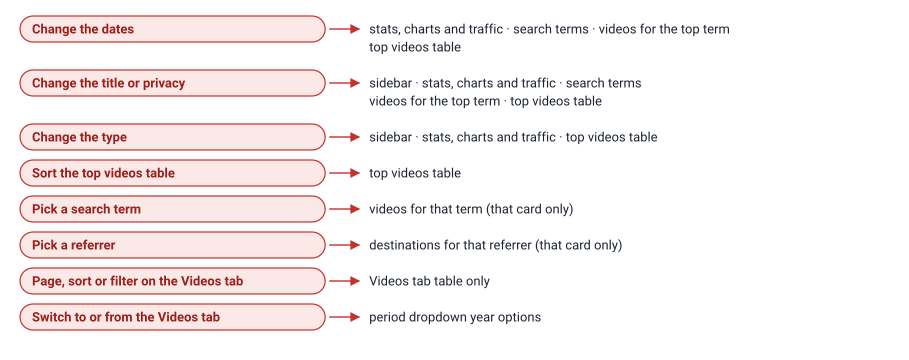
- The title boxes wait until you stop typing for 300 ms before anything reloads.
- With the Related Videos sub-tab open, date, title, privacy and type changes also reload the referrers, and date changes reload the destinations.
- After a date, title or privacy change, the two "videos for the top search term" requests run twice, the same as on Analytics.
- The Videos tab count request runs on every tab, because its total labels the tab.
- None of the requests wait for the playlist header, so an unknown playlist ID sends every request and each comes back 404.
Sync /sync
The open tab and the History page number live in the URL.
When the page opens
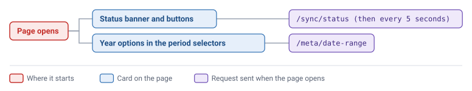
History tab
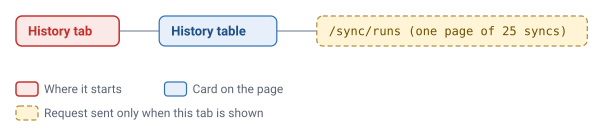
When you change something
- Checking stages or changing periods on the Sync tab sends nothing until you press Sync selected.
- The page polls /sync/status on both tabs. The top navigation's status indicator polls it too, so this page sends two status requests every 5 seconds.
Requests per page open
How many requests each page sends when it opens on its default tab, not counting the top navigation's status poll.

- Opening Analytics or PlaylistAnalytics on the Related Videos sub-tab adds 2 referrer requests, then 2 destination requests once those come back.
- Setting the Type filter to Video or Short on Analytics or PlaylistAnalytics removes 2 of the 4 sidebar requests.
API wrapper index
Every function in frontend/src/api.ts, the route it calls, and where it is used.
Videos
- Function
- Route
- Used by
getVideos/videos- Home, Videos, Analytics
getVideoStats/videos/stats- Videos, Analytics
getVideosPublished/videos/published- Analytics, PlaylistAnalytics
getVideo/videos/{id}- VideoAnalytics
getVideoAnalytics/videos/{id}/analytics- VideoAnalytics
getVideoTrafficSources/videos/{id}/traffic-sources- VideoAnalytics
Playlists
- Function
- Route
- Used by
getPlaylists/playlists- Playlists
getPlaylist/playlists/{id}- PlaylistAnalytics
getPlaylistVideos/playlists/{id}/videos- PlaylistAnalytics
getPlaylistVideoStats/playlists/{id}/videos/stats- PlaylistAnalytics
Charts and top videos
- Function
- Route
- Used by
getChannelAnalytics/analytics/videos- Analytics
getTopVideosByViews/analytics/videos/top- Home, Analytics
getPlaylistAnalytics/analytics/playlists/{id}- PlaylistAnalytics
getPlaylistAggregatedAnalytics/analytics/playlists/{id}- nothing (duplicate of getPlaylistAnalytics)
getPlaylistTopVideosByViews/analytics/playlists/{id}/top- PlaylistAnalytics
Traffic sources
- Function
- Route
- Used by
getChannelTrafficSources/analytics/traffic-sources- Home, Analytics
getTopVideosByTrafficSource/analytics/traffic-sources/top- Analytics
getPlaylistTrafficSources/analytics/playlists/{id}/traffic-sources- PlaylistAnalytics
getPlaylistTopVideosByTrafficSource/analytics/playlists/{id}/traffic-sources/top- PlaylistAnalytics
Search insights
- Function
- Route
- Used by
getSearchTerms/analytics/search-insights- Home, Analytics
getTopSearchTerms/analytics/search-insights/top- nothing
getVideosBySearchTerm/analytics/search-insights/videos- Home, Analytics
getVideoSearchTerms/analytics/videos/{id}/search-insights- VideoAnalytics
getPlaylistSearchTerms/analytics/playlists/{id}/search-insights- PlaylistAnalytics
getPlaylistTopSearchTerms/analytics/playlists/{id}/search-insights/top- nothing
getPlaylistVideosBySearchTerm/analytics/playlists/{id}/search-insights/videos- PlaylistAnalytics
Related videos
- Function
- Route
- Used by
getRelatedVideoReferrers/analytics/related-videos/referrers- Analytics
getRelatedVideoDestinations/analytics/related-videos/destinations- Analytics, VideoAnalytics
getVideoRelatedVideoReferrers/analytics/videos/{id}/related-videos/referrers- VideoAnalytics
getPlaylistRelatedVideoReferrers/analytics/playlists/{id}/related-videos/referrers- PlaylistAnalytics
getPlaylistRelatedVideoDestinations/analytics/playlists/{id}/related-videos/destinations- PlaylistAnalytics
Comments
- Function
- Route
- Used by
getComments/comments- CommentsPanel
getVideoComments/comments/videos/{id}- CommentsPanel
getPlaylistComments/comments/playlists/{id}- CommentsPanel
Sync and metadata
- Function
- Route
- Used by
getSyncStatus/sync/status- SyncStatus, Sync
triggerSyncPOST /sync/trigger- Sync
stopSyncPOST /sync/stop- Sync
getSyncRuns/sync/runs- Sync
getDateRange/meta/date-range- PeriodSelect, Sync
Requests that may run unnecessarily
Observations from the source, not measured browser traffic.
Hidden-tab requests
On Analytics and PlaylistAnalytics, everything except the Related Videos requests loads whichever tab is open. Opening the page on the Comments tab still sends 13 analytics requests. Search-term requests load while other sub-tabs are showing, top videos per traffic source loads on the Analytics tab, and the sidebar and top videos table load on Traffic Sources. VideoAnalytics loads its chart, traffic and search requests on every tab, including Comments.
Term videos load twice
On Analytics and PlaylistAnalytics, a date, title or privacy change sends the "videos for the top search term" requests straight away with the old top term, then again when the new term lists arrive, even if the top term hasn't changed.
Two status pollers on the Sync page
The top navigation and the Sync page each request /sync/status every 5 seconds, so that page sends two per interval. The top navigation's poll runs on every page whether or not a sync is running.
Date range on every appearance
The period dropdown requests /meta/date-range every time it appears. Switching tabs brings it back and requests it again, PlaylistAnalytics has two of them on different tabs, and the Sync page requests the same thing separately.
No wait for the video or playlist
VideoAnalytics and PlaylistAnalytics send all their requests at the same time as the video or playlist lookup, so an unknown ID produces a burst of 404s. VideoAnalytics hides its tabs then, but the requests have already gone.
History reload
The Sync page forgets the history when you leave the History tab and requests it again when you come back.
Unused API functions
getPlaylistAggregatedAnalytics duplicates getPlaylistAnalytics and has no caller. getTopSearchTerms and getPlaylistTopSearchTerms have no caller, so the two …/search-insights/top routes are never requested by the frontend.